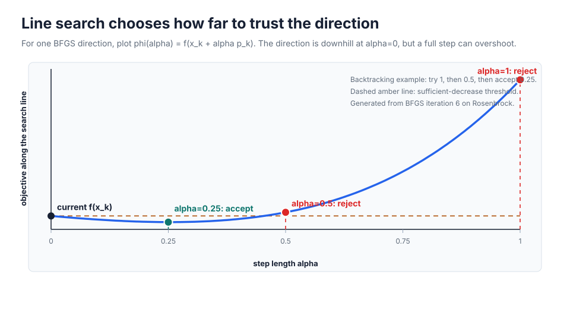
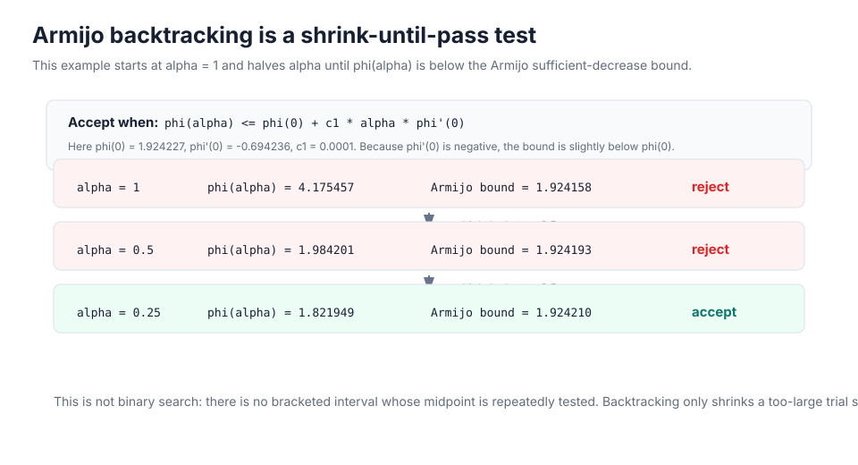
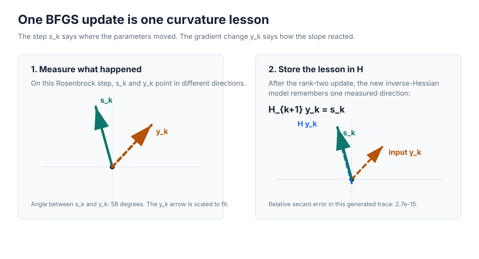

Start With Gradient Descent
Suppose you want to minimize a smooth function \(f(x)\). The gradient \(g_k=\nabla f(x_k)\) tells you which direction increases the function fastest, so \(-g_k\) points downhill. That sounds enough until the level curves are long and skinny. Then steepest descent often bounces across the valley: every step is downhill, but many of them point sideways more than forward.
The missing ingredient is curvature. A gradient tells you the local slope at one point, but it does not tell you whether the surface is steep like a wall in one direction and flat like a valley floor in another. Newton's method is the classic way to use that second piece of information.
Newton's Method First
Newton's method starts by replacing the objective near \(x_k\) with a local quadratic model. In multiple variables, that model is built from the current value, the gradient, and the Hessian matrix \(B_k=\nabla^2 f(x_k)\):
Here \(p\) means "the step away from the current point." To minimize this quadratic model, differentiate it with respect to \(p\) and set that derivative to zero:
If \(B_k\) is positive definite, this step points to the minimum of the local quadratic model. Written with an inverse, the Newton direction is
This is the important idea: Newton rescales the gradient by curvature. Directions with high curvature get shorter steps; directions with low curvature can get longer steps. A line search may still choose \(x_{k+1}=x_k+\alpha_k p_k\) instead of taking the full step, because the quadratic model is only a local approximation.
Newton's method is powerful, but it asks for a lot. You need Hessian information, you need to solve a linear system, and the Hessian can be expensive, dense, or indefinite. BFGS exists for the common situation where you want Newton-like curvature correction, but you only want to provide function values and gradients.
From Newton To BFGS
BFGS keeps Newton's shape and swaps out the expensive part. Instead of computing the true inverse Hessian \(B_k^{-1}\), it maintains an approximation \(H_k\):
At the beginning, \(H_k\) is often just the identity matrix, so the first direction behaves like steepest descent. After each accepted step, BFGS updates \(H_k\) so it better imitates the inverse Hessian near the path the optimizer has actually traveled.
One Iteration, Slowly
A BFGS iteration has two jobs. First it must find a safe downhill point. Then it must learn something about curvature from the movement it just made.
- Start at \(x_k\) and evaluate the gradient \(g_k=\nabla f(x_k)\).
- Turn the gradient into a search direction with the current inverse-Hessian estimate: \(p_k=-H_k g_k\).
- Use a line search to choose a step length \(\alpha_k\). The line search prevents the curvature model from taking an impressive but reckless full step. The next section slows down this part.
- Move to \(x_{k+1}=x_k+\alpha_k p_k\), then evaluate \(g_{k+1}\).
- Compare what changed in the parameters with what changed in the gradient: \(s_k=x_{k+1}-x_k\) and \(y_k=g_{k+1}-g_k\).
The pair \((s_k,y_k)\) is the new information. It says: "when I moved by \(s_k\), the gradient changed by \(y_k\)." BFGS turns that single observation into an updated matrix \(H_{k+1}\).
Line Search: Choosing Alpha
The direction \(p_k=-H_k g_k\) answers "which way should we go?" Line search answers a different question: "how far should we trust that direction?" Instead of jumping immediately to \(x_k+p_k\), BFGS studies the one-dimensional function along the search ray:
That notation means: freeze the current point \(x_k\) and direction \(p_k\), then treat only \(\alpha\) as the variable. For the Rosenbrock example in the figure below, the generated BFGS trace uses
Since the two-dimensional Rosenbrock function is \(f(x_0,x_1)=100(x_1-x_0^2)^2+(1-x_0)^2\), the line-search function for this particular step comes from the point on the search line \(z(\alpha)=x_k+\alpha p_k\):
So the line search is not optimizing a mysterious new objective. It is sampling the original Rosenbrock function along one straight line in parameter space.

Is \(\phi(\alpha)\) Just \(f\) With A Different Variable?
Not quite. The original objective \(f\) still takes the full parameter vector as input. If \(x\in\mathbb{R}^n\), then \(f(x)\) expects \(n\) numbers. The function \(\phi\) is a new one-dimensional slice made by composing \(f\) with the line \(x_k+\alpha p_k\):
So \(\phi\) is not the same function as \(f\). It is \(f\) viewed through one chosen search line. When \(f\) is two-dimensional, the line search temporarily turns the problem into a one-dimensional question. When \(f\) has a million variables, the same idea still gives a one-dimensional question because only \(\alpha\) is allowed to move.
If \(\alpha\) is too large, the step can shoot across the valley and increase the objective. If \(\alpha\) is too tiny, the method makes safe but timid progress and learns weak curvature information. A line search looks for a middle ground: enough decrease in \(f\), while still taking a meaningful step.
Where Does \(\phi'(\alpha)\) Come From?
Do not jump straight to the compact formula. First name the point on the search line:
In coordinates, this means each component of \(z\) is a simple linear function of the scalar \(\alpha\):
Differentiate that coordinate with respect to \(\alpha\). The current coordinate \(x_{k,i}\) is fixed, and the direction component \(p_{k,i}\) is fixed, so
Now remember that \(\phi(\alpha)=f(z(\alpha))\). Changing \(\alpha\) changes every coordinate \(z_i\), and each coordinate changes \(f\) according to the partial derivative \(\partial f/\partial z_i\). The multivariable chain rule adds those contributions:
That last sum is exactly a dot product: the gradient of \(f\) at the current point on the line, dotted with the search direction:
There are two derivative objects here, so keep them separate. \(\nabla f(\cdot)\) is the gradient of the original objective with respect to the full vector input. \(\phi'(\alpha)\) is the derivative of the one-dimensional slice with respect to the scalar \(\alpha\). The chain rule connects them, but they are not the same kind of derivative: \(\nabla f(z(\alpha))\) is a vector, while \(\phi'(\alpha)\) is a scalar.
The scalar \(\phi'(\alpha)\) is produced by taking that gradient vector and projecting it onto the search direction:
Now set \(\alpha=0\). The line starts at the current iterate because \(z(0)=x_k+0p_k=x_k\). By definition, \(g_k\) is the gradient of the original objective at that same current iterate:
Therefore the gradient of \(f\) evaluated at the start of the line is the same vector:
Substitute that into the slice derivative:
For a valid BFGS search direction, this number is negative. In plain words: at the start of the line, increasing \(\alpha\) a little should move downhill.
Why Use The Armijo Condition?
A tempting rule would be "accept any \(\alpha\) that makes \(f\) smaller." That is too weak. A microscopic step can reduce the objective by a microscopic amount, pass that rule, and still waste an iteration. Armijo asks for enough decrease compared with the local downhill slope predicted by \(\phi'(0)\).
A common first test is sufficient decrease, also called the Armijo condition:
Because \(p_k\) should be a descent direction, \(g_k^\mathsf{T}p_k \lt 0\). The right-hand side is therefore slightly below the current value \(f(x_k)\), so the candidate step must reduce the objective by a reasonable amount. The constant \(c_1\) is usually small, so Armijo does not demand the full linear prediction; it demands a modest fraction of it. That makes the test forgiving enough for curved objectives, but strict enough to reject obvious overshoots.
Armijo alone mostly protects against steps that are too large. Very tiny steps can still pass it. That is why many BFGS implementations also use a curvature condition, often as part of the Wolfe or strong Wolfe conditions, to avoid accepting a step that is technically lower but still poorly placed along the line.
The Search Method Used Here
The generated BFGS example uses backtracking line search. It starts with a full step \(\alpha=1\). If that step fails Armijo, it shrinks the step by a fixed factor \(\beta=0.5\), then tries again:
This is not binary search. Binary search keeps a lower and upper bracket and repeatedly tests the midpoint. Backtracking has no such bracket here; it simply says, "the current step is too large, so make it smaller by the same multiplier."

Numerically, the objective starts at about \(1.924\). Trying \(\alpha=1\) raises it to about \(4.175\), so that trial is rejected. Trying \(\alpha=0.5\) still lands above the starting value, around \(1.984\). Trying \(\alpha=0.25\) lowers the objective to about \(1.822\), so the step is accepted and BFGS can form the curvature pair \(s_k=x_{k+1}-x_k\) and \(y_k=g_{k+1}-g_k\).
Can We Optimize \(\alpha\) Directly?
Yes, in principle. Since \(\alpha\) is scalar, an exact line search would try to minimize \(\phi(\alpha)\) directly, often by looking for a stationary point:
The practical issue is cost and reliability. Solving this one dimensional problem exactly can require many extra objective and gradient evaluations. The function \(\phi\) may also be nonconvex along the line, so \(\phi'(\alpha)=0\) can describe a local minimum, a local maximum, or a stationary point that is farther than BFGS needs to go.
BFGS usually does not need the best possible \(\alpha\) on the current line. It needs a step that decreases the objective, is not absurdly small, and produces trustworthy curvature information for the next update. Armijo and Wolfe-style inexact line searches target exactly that cheaper, algorithm-level goal.
The Curvature Lesson
The key condition is called the secant condition. Here is the slow path to it.
Start with the second-order idea from Newton's method. If the Hessian near the current step were a constant matrix \(B\), then gradients would change approximately linearly:
Now plug in the step BFGS actually took, \(s_k=x_{k+1}-x_k\). The observed gradient change is \(y_k=g_{k+1}-g_k\), so the local Hessian model should explain that observation:
That gives the Hessian version of the secant condition:
BFGS stores an inverse-Hessian approximation \(H_k\), not the Hessian approximation \(B_k\). If \(H_{k+1}\) is supposed to behave like \(B_{k+1}^{-1}\), multiply the Hessian condition by that inverse:
So the inverse-Hessian version used by BFGS is
Read it in words before reading it as algebra: the new inverse-Hessian approximation should map the observed gradient change back to the step that produced it. BFGS does not magically know the full Hessian. It only forces the next matrix to be correct on the direction it just measured, while changing the previous matrix as little as possible in a carefully chosen sense.
Why Not Just Divide \(s_k\) By \(y_k\)?
In one variable, you actually can think this way. If \(s_k\), \(y_k\), and \(H_{k+1}\) are all scalars, then \(H_{k+1}y_k=s_k\) gives
But in many variables, \(H_{k+1}\) is a matrix, while \(s_k\) and \(y_k\) are vectors. Matrix-vector multiplication is not scalar multiplication, so there is no single operation called "divide by \(y_k\)" that recovers a matrix.
Write the two-dimensional case out. Let
Then the secant condition means
That is only two equations, but the matrix has four unknown entries. In \(n\) dimensions, \(H_{k+1}y_k=s_k\) gives \(n\) equations for \(n^2\) matrix entries. So the secant condition alone does not define a unique matrix. It only says what the matrix must do to this one vector \(y_k\).
You could try a componentwise ratio such as \(\operatorname{diag}(s_1/y_1,\ldots,s_n/y_n)\), but that is an arbitrary diagonal choice. It ignores off-diagonal curvature: the way changing one coordinate can affect the best movement in another coordinate. Those cross effects are exactly why Newton and BFGS use matrices instead of only per-coordinate scale factors.
BFGS therefore asks a more precise question: among the many matrices that satisfy \(H_{k+1}y_k=s_k\), choose one that keeps symmetry, preserves positive definiteness when the curvature sign is good, and changes the previous matrix \(H_k\) in a controlled low-rank way.
In one sentence: \(s_k\) is what you did, \(y_k\) is how the gradient responded, and the secant condition makes the next curvature model remember that measured cause-and-effect pair exactly.

To get that behavior, BFGS uses this rank-two update:
What Does "Rank-Two Update" Mean?
The update is easier to read if we separate the old matrix from the correction being added to it:
A rank-two update means \(\Delta_k\) is a very structured correction. It does not rebuild an entirely new inverse-Hessian approximation from scratch. Instead, it changes the old matrix using at most two directions learned from the latest step.
The basic building block is an outer product. If \(a\) and \(b\) are vectors, then \(ab^\mathsf{T}\) is a matrix. When it acts on a vector \(v\), it does two simple things:
First \(b^\mathsf{T}v\) measures how much \(v\) points in the \(b\)-direction. Then the result is put back in the \(a\)-direction. So an outer product can only output multiples of one vector, \(a\). That is why it is called rank one.
For BFGS, name the old matrix's current answer to the new gradient change:
The secant condition says the new answer must be \(s_k\), but the old answer is \(q_k\). So the correction has two intuitive jobs: remove the old answer \(q_k\), and insert the measured answer \(s_k\).
If the compact BFGS formula is expanded, the correction can be written in terms of only those two vectors:
This line has several outer-product-looking pieces, but every change it makes points in the span of \(s_k\) and \(q_k\). In other words, \(\Delta_k v\) is always some combination of those two vectors. That is the practical meaning of "rank two" here: BFGS updates the huge matrix through a two-direction correction, not by relearning all curvature directions at once.
The Compact Formula
Read the multiplication from right to left. The right factor removes the \(y_k\)-direction before the old matrix \(H_k\) can return its old answer \(q_k=H_k y_k\). The final term then inserts the answer BFGS wants, \(s_k\).
Here is the key check without skipping the algebra. Apply the update to \(y_k\). Because \(\rho_k=1/(y_k^\mathsf{T}s_k)\), we have \(\rho_k s_k^\mathsf{T}y_k=1\):
So the big old-model part contributes nothing when the input is \(y_k\):
Only the inserted displacement term remains:
Put those two pieces together:
That is the secant condition. The formula may look intimidating, but its most important job is simple: after the update, the matrix gives the right answer for the gradient change BFGS just observed.
Why This Shape Is Useful
Many different matrices could satisfy \(H_{k+1}y_k=s_k\). BFGS uses this particular symmetric rank-two correction because it preserves the properties needed by the next search direction. If \(H_k\) is symmetric, the new \(H_{k+1}\) is symmetric too. If \(H_k\) is positive definite and \(y_k^\mathsf{T}s_k \gt 0\), then \(H_{k+1}\) stays positive definite.
The positive-definite part can also be read directly from the compact formula. For any vector \(v\), define \(w=(I-\rho_k y_k s_k^\mathsf{T})v\). Then
If \(H_k\) is positive definite, the first term is never negative. If \(y_k^\mathsf{T}s_k \gt 0\), then \(\rho_k\) is positive, so the second term is never negative either. This is why the curvature sign matters: it lets BFGS keep using \(p_k=-H_k g_k\) as a descent direction instead of turning the inverse-Hessian approximation into something unstable.
Positive definiteness matters because then \(p_k=-H_k g_k\) remains a descent direction. In practice, line searches based on Wolfe conditions are used partly because they encourage \(y_k^\mathsf{T}s_k>0\). If that curvature test fails, robust implementations damp, skip, or reset the update rather than trusting a bad curvature lesson.
Watch It On Rosenbrock
The Rosenbrock function is a standard optimizer stress test because it has an easy-to-state minimum inside a curved, narrow valley:
This is exactly the type of shape where plain steepest descent tends to zig-zag. BFGS begins with local gradient information, but as it accumulates \((s_k,y_k)\) pairs, the inverse-Hessian estimate starts bending directions along the valley instead of across it.

The payoff is not that gradients are free. The payoff is that each gradient can make the next step much smarter. On smooth moderate-sized problems, BFGS often needs far fewer objective evaluations than a derivative-free search.

Use BFGS In SciPy
In SciPy, call minimize with method="BFGS".
Give it a gradient through jac when you can. If
jac is missing, SciPy estimates gradients by finite
differences, which can work but usually costs more function calls and
can be sensitive to scaling.
import numpy as np
from scipy.optimize import check_grad, minimize
def rosen(x):
return np.sum(100.0 * (x[1:] - x[:-1]**2.0)**2.0 + (1 - x[:-1])**2.0)
def rosen_der(x):
der = np.zeros_like(x)
der[1:-1] = (
200 * (x[1:-1] - x[:-2]**2)
- 400 * x[1:-1] * (x[2:] - x[1:-1]**2)
- 2 * (1 - x[1:-1])
)
der[0] = -400 * x[0] * (x[1] - x[0]**2) - 2 * (1 - x[0])
der[-1] = 200 * (x[-1] - x[-2]**2)
return der
x0 = np.array([1.3, 0.7, 0.8, 1.9, 1.2])
# A small value here is a strong sign that the analytic gradient matches rosen.
print("gradient check:", check_grad(rosen, rosen_der, x0))
result = minimize(
rosen,
x0,
method="BFGS",
jac=rosen_der,
options={"gtol": 1e-8, "disp": True},
)
print(result.x)
print(result.fun)
print(result.success, result.message)
The returned result.hess_inv is the final inverse-Hessian
approximation. It is not the exact inverse Hessian, but it is often a
useful diagnostic: if the run converged cleanly, it represents the
curvature model BFGS ended with.
When To Use It
| Use BFGS when | Prefer another method when |
|---|---|
| The objective is smooth, unconstrained, and moderate-sized. | The problem has simple bounds; use L-BFGS-B or another bounded method. |
| A reliable gradient is available or cheap to estimate. | The function is noisy or nonsmooth enough that gradient differences are not trustworthy. |
| You want Newton-like behavior without coding Hessians. | The variable count is very large; dense \(H_k\) storage costs \(O(n^2)\) memory. |
| Your variables are reasonably scaled, or you can rescale them. | You can provide Hessian-vector products for a large problem; Newton-CG or trust-krylov may scale better. |
The most common BFGS disappointments are not mysterious: inaccurate gradients, badly scaled variables, noisy objectives, or asking a dense method to handle a huge problem. When those are under control, BFGS is one of the strongest default local optimizers for smooth unconstrained minimization.